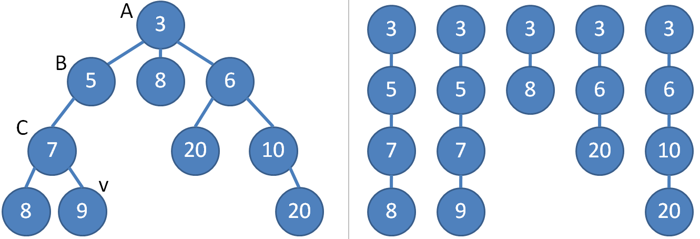

Problem Solving Paradigms
std::lower_bound or std::upper_boundCollections.binarySearchbisect package(Thailand ICPC National Contest 2009)
Given a weighted (family) tree of up to $N \le 80K$ vertices with vertex values increasing from root to leaf, find the ancestor vertex closest to the root from a starting vertex $v$ that has weight at least $P$. There are $Q \le 20K$ such offline queries.

(Thailand ICPC National Contest 2009)
Given a weighted (family) tree of up to $N \le 80K$ vertices with vertex values increasing from root to leaf, find the ancestor vertex closest to the root from a starting vertex $v$ that has weight at least $P$. There are $Q \le 20K$ such offline queries.
Naive approach: perform linear $O(N)$ scan per query. Starting from vertex $v$, walk up to find the first vertex whose parent is too small to satisfy the criteria. There are $Q$ queries, for a runtime of $O(QN)$, and TLE.
(Thailand ICPC National Contest 2009)
Given a weighted (family) tree of up to $N \le 80K$ vertices with vertex values increasing from root to leaf, find the ancestor vertex closest to the root from a starting vertex $v$ that has weight at least $P$. There are $Q \le 20K$ such offline queries.
Better approach: store all $Q \le 20K$ queries (we do not have to answer them immediately). Traverse the tree once using a pre-order traversal modified to keep track of the root to current vertex sequence. What property does this sequence have?
(Thailand ICPC National Contest 2009)
Given a weighted (family) tree of up to $N \le 80K$ vertices with vertex values increasing from root to leaf, find the ancestor vertex closest to the root from a starting vertex $v$ that has weight at least $P$. There are $Q \le 20K$ such offline queries.
Better approach: binary search the root to current vertex paths because they are sorted sequences. During the $O(N)$ pre-order traversal, when we find a queried vertex, obtain the correct ancestor vertex via binary search. $O(Q)$ iteration to output results, for overall $O(N + Q \lg N)$, which is fast enough.
You buy a car with a loan that you hope to repay in monthly installments of $d$ dollars for $m$ months. Suppose the value of the car was originally $v$ dollars and the bank charges an interest rate of $i\%$ for any unpaid loan at the end of each month. What is the amount of monthly installment $d$ that must be paid, given $m, v, i$? Note that the payment is made after the interest has been calculated.
You buy a car with a loan that you hope to repay in monthly installments of $d$ dollars for $m$ months. Suppose the value of the car was originally $v$ dollars and the bank charges an interest rate of $i\%$ for any unpaid loan at the end of each month. What is the amount of monthly installment $d$ that must be paid, given $m, v, i$? Note that the payment is made after the interest has been calculated.
One solution: choose $a,b$ values at the extremes and calculate the amount repaid at $x=\frac{a+b}{2}$. If $f(x)$ has the same sign as $f(a)$, repeat with $x,b$, otherwise with $a,x$, bisecting the search space.
One solution: choose $a,b$ values at the extremes and calculate the amount repaid at $x=\frac{a+b}{2}$. If $f(x)$ has the same sign as $f(a)$, repeat with $x,b$, otherwise with $a,x$, bisecting the search space.
When do we stop this process?
(UVa 11935)
You are an explorer crossing the desert. Your life depends on your jeep having enough fuel to make the journey. Compute the smallest volume necessary. Your input is a series of events, including fuel consumption changes, leaks (which drain your fuel tank over time), repairs (fixing leaks), and gas refills.
(UVa 11935)
You are an explorer crossing the desert. Your life depends on your jeep having enough fuel to make the journey. Compute the smallest volume necessary. Your input is a series of events, including fuel consumption changes, leaks (which drain your fuel tank over time), repairs (fixing leaks), and gas refills.